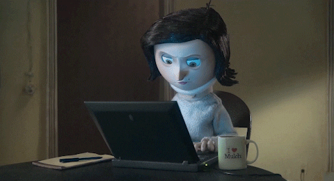

¿QUÉ TENER EN CUENTA PARA MEJORAR TU STOP MOTION?

Bien ahora hablemos de que debemos tener en cuenta a la hora de aplicar esta técnica en nuestros inicios y los programa que podemos utilizar para un mejor resultado.
-Una de las cosas a tomar en cuenta es una sutil transferencia o modificación de las fotografías en la posición del objeto que se va animar, entre más pequeña sea, un mejor y realista resultado.
-Debemos ser cuidadosos en el momento de preparar el set o lugar donde se va a realizar la filmación, ya que esta técnica tiene el defecto de ser progresiva, no hay margen para los errores, si se llega a equivocarse entonces se tiene que volver a iniciar todo desde cero.
-Colocar la cámara de manera estabilizada, esto con el enfoque que se eviten las vibraciones no necesarias.
Por último les menciono algunos programas de edición que son especiales para el stop motion, como:
-Jelly Cam.
-Stop frame animator.
 |
Universidad Centroamericana 2021- Trabajo para asignación Digital 3 - Andrea Guevara